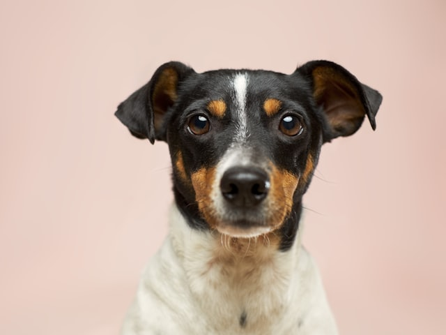
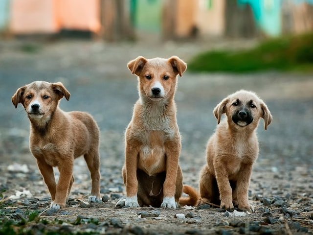

Jak wybrać rasę psa do mieszkania bez ogrodu
Trzy rzeczy ważniejsze niż rozmiar psa.
Zobacz artykuł →Odpowiedz na kilka pytań o swoim stylu życia, a my dopasujemy rasę psa, z którą będziecie szczęśliwi — Ty i on.
 🐾 Twoje dopasowanie
🐾 Twoje dopasowanie
O czasie, aktywności, mieszkaniu i doświadczeniu z psami. Około 3 minut.
Konkretną rasę z dopasowaniem procentowym i pełnym uzasadnieniem.
Pomożemy Ci znaleźć psa tej rasy u sprawdzonego, zweryfikowanego źródła.
Przeanalizowaliśmy zachowanie ponad 350 ras uznawanych przez FCI i przeprowadziliśmy setki pogłębionych wywiadów z właścicielami — o codziennych radościach i o tym, kiedy dopasowanie się nie udało.
Nie oceniamy rasy po zdjęciach z Instagrama. Oceniamy ją po tym, jak naprawdę wygląda z nią codzienne życie.
W polskich schroniskach w 2023 roku przebywało ponad 81 tysięcy psów. Często dlatego, że pies trafia do domu nieprzygotowanego na jego temperament — a miesiące później zostaje oddany.
Czworonożny przyjaciel to nie zwierzę na próbę. To członek rodziny — na całe jego życie.

Wybór rasyTrzy rzeczy ważniejsze niż rozmiar psa.
Zobacz artykuł → Zachowanie
ZachowanieI co z tym zrobić, zanim stanie się problemem.
Zobacz artykuł → Rodzina
RodzinaBezpieczne dopasowanie dla młodej rodziny.
Zobacz artykuł →
HodowcyLista kontrolna przed odbiorem szczeniaka.
Zobacz artykuł →„Zrobiłam test w przerwie na kawę, a dwa tygodnie później mieliśmy umówiony odbiór szczeniaka od zweryfikowanego hodowcy."
„Bałem się, że nie udźwignę tresury — dzięki dopasowaniu dostałem psa, który uczy się właściwie sam."
„W końcu ktoś zapytał mnie o styl życia, zanim podpowiedział rasę. Trafienie w dziesiątkę."